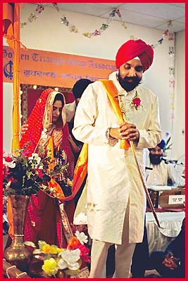
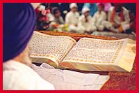
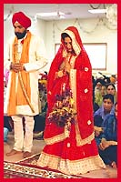
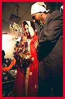

Sikh Wedding


Reading of the Lavans
The religious ceremony can be conducted by any respected Sikh man or woman. In this case it is being conducted by the local granthi who is in charge of respectfully looking after Sri Guru Granth Sahib. The ceremony officially begins with the officiate after having ascertained that both the bride and groom are Sikh asking the couple to stand up as well as their parents for Ardas. This family Ardas indicated the public consent of the parties involved to this marriage taking place. Every time the bride and groom arise or sit down during the ceremony they will bow down to Sri Guru Granth Sahib out of respect by touching their foreheads to the ground. After Ardas the couple sit down and the officiate then lectures the couple in the significance of marriage, their duties and obligations to each others as equal partners. The couple indicate their agreement to these guidelines and principles by bowing down before Sri Guru Granth Sahib. The father of the bride then places one end of a scarf or sash worn by the groom over his shoulders in his daughters hand signifying that she is now leaving his care to join her husbands. The officiate now reads the Lavan hymn of Guru Ram Das which is composed of four stanzas. The four stanza of the hymn describes the progression of love between a husband and wife which is analogous to that between the soul (bride) and God (the husband). After the conclusion of the recitation of each stanza the groom followed by the bride holding the end of the scarf go around Sri Guru Granth Sahib in a clockwise direction while the ragis sing out the recited Lavan stanza. After each round the couple sit down and listen while the officiate reads the next stanza. The ragis then sing it while the couple completes another walk around Sri Guru Granth Sahib. This process is repeated four times in total for each stanza of the Lavan after which the couple sit down. During their walk around Sri Guru Granth Sahib often there will be members of the girls family who help her complete her rounds with her husband. This is to signify their support for her as she leaves one family for another.
|  Completing a circle holding the sash in hand. |
 Reading of the Lavan hymn begins. |
|
|  Standing up during the Ardas for the family. |
 The brides family members help her. |
|